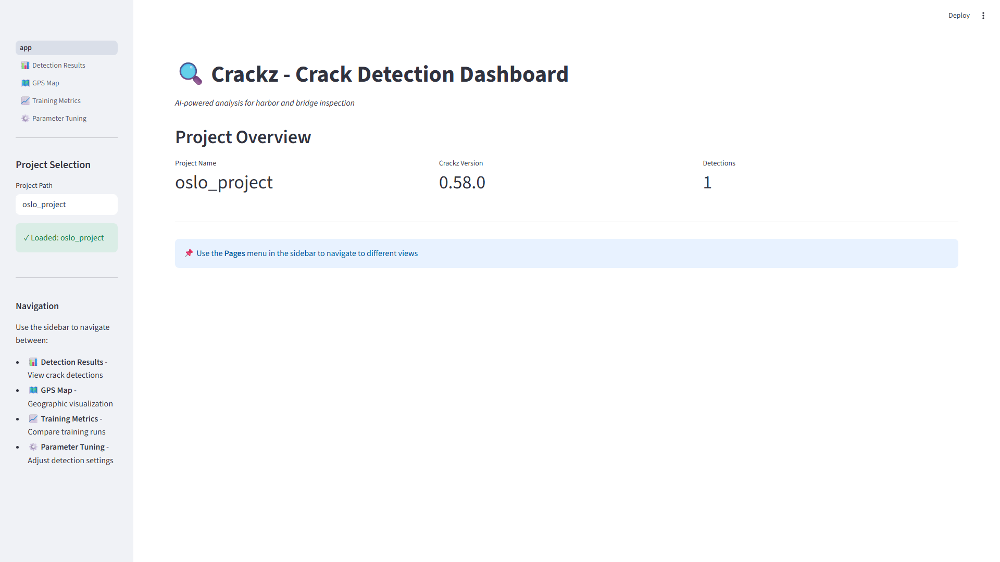
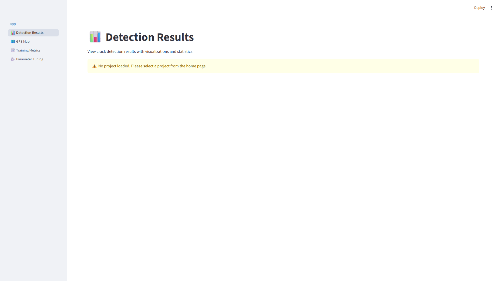
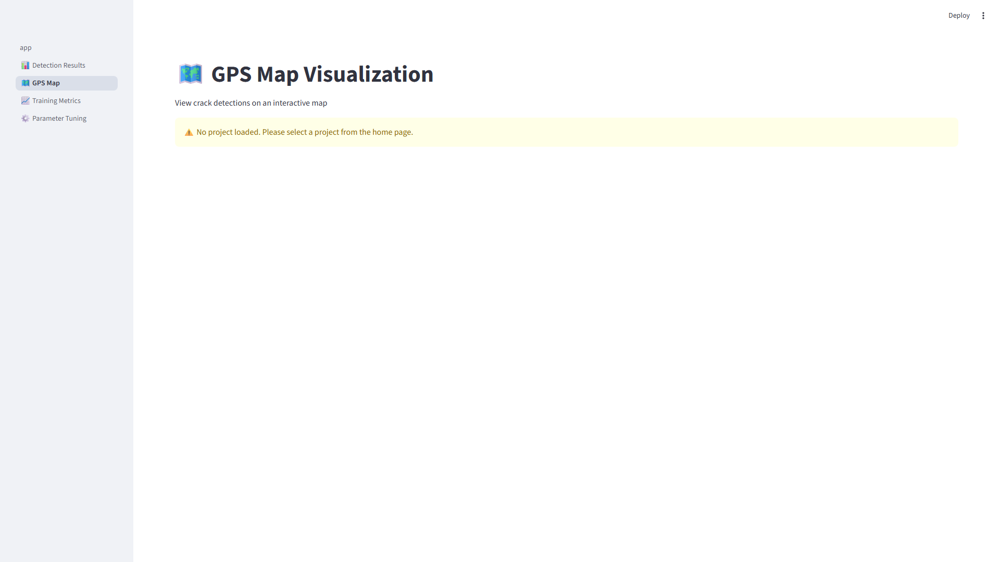
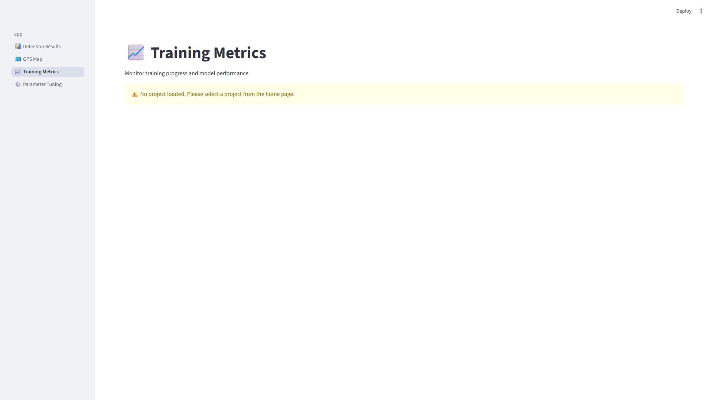
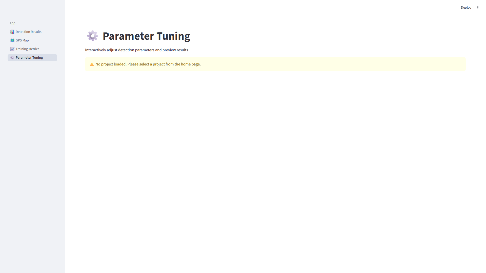

Streamlit Dashboard¶
The Crackz Streamlit dashboard provides an interactive web-based interface for analyzing crack detection results, visualizing training metrics, and exploring GPS-tagged crack locations.
Dashboard Screenshots¶
Home Page¶

Detection Results¶

GPS Map¶

Training Metrics¶

Parameter Tuning¶

Overview¶
The dashboard is a comprehensive visualization tool that complements the CLI and GUI, offering:
- Interactive data exploration with filters and sorting
- Rich visualizations using Plotly charts
- GPS mapping with Folium for geographic visualization
- Real-time parameter tuning for detection thresholds
- Export capabilities for results and metrics
Quick Start¶
Launch from CLI¶
# Launch with a specific project
crackz dashboard --project my-project
# Launch with custom port
crackz dashboard --project my-project --port 8502
Launch from GUI¶
The GUI provides the most convenient way to launch the dashboard:
- Open your project in the Crackz GUI (
crackz-gui) - Click Tools → Launch Dashboard from the menu bar
- Configure launch options in the dialog:
- Automatic port selection (recommended) or custom port
- Project validation ensures compatibility
- Click Start Dashboard to launch
GUI Integration Benefits: - Automatic project context: Uses currently open project - Real-time status tracking: Visual indicators show server status - Error handling: User-friendly error messages and solutions - Simplified workflow: No CLI commands to remember
The dashboard will automatically open in your default web browser at the specified port.
Alternative Launch Methods¶
You can also launch the dashboard directly with Streamlit:
streamlit run src/crackz/dashboard/app.py -- --project my-project
Or programmatically from Python:
from crackz.dashboard import launch_dashboard
launch_dashboard(project_name="my-project", port=8501)
Dashboard Pages¶
The dashboard consists of four main pages accessible from the sidebar menu:
1. Detection Results 📊¶
View and analyze crack detection results with comprehensive visualizations and statistics.
Features: - Summary metrics (total detections, average confidence, average IoU, crack count) - Interactive charts: - Detection counts (cracks vs no cracks) - Confidence score distribution - IoU score distribution (when ground truth available) - Crack severity distribution - Filterable and sortable results table - Paginated image gallery showing detection visualizations - Export results as CSV or JSON
Usage: 1. Select a project from the home page 2. Navigate to "Detection Results" page 3. Use filters to refine results (crack presence, confidence threshold) 4. Sort by various metrics (batch, confidence, IoU) 5. Browse detection visualizations in the image gallery
2. GPS Map 🗺️¶
Visualize crack locations on an interactive map using GPS coordinates from image EXIF metadata.
Features: - Interactive Folium maps with marker clusters - Color-coded markers: - 🔴 Red: Cracks detected - 🟢 Green: No cracks - 🔵 Blue: Unknown status - Heatmap visualization showing crack concentration - Filters: - Show all locations / cracks only / no cracks - Minimum confidence threshold - Location details table with GPS coordinates - Export GPS data as CSV
GPS Data Requirements: - Images must contain EXIF GPS metadata - GPS coordinates are automatically extracted from image files - Supports images from test/val/train/raw splits
Usage: 1. Ensure your images have GPS EXIF metadata 2. Navigate to "GPS Map" page 3. Choose between markers or heatmap view 4. Apply filters to focus on specific detections 5. Click markers for detailed information
Troubleshooting:
If no GPS data is shown:
- Verify images have GPS metadata: crackz geo extract-gps --project <name>
- Check that images are in your project's data directories
- Use GPS-enabled cameras or phones to capture images
3. Training Metrics 📈¶
Monitor model training progress with detailed metrics and visualizations.
Features: - Training summary (total epochs, final losses, best validation loss) - Training and validation loss plots over epochs - Additional metrics visualization (accuracy, precision, recall, etc.) - Epoch-by-epoch metrics table - Training configuration display - Export metrics as CSV or JSON
Data Source:
Metrics are loaded from artifacts/training/training_metrics.json
Usage:
1. Train a model: crackz train --project <name>
2. Navigate to "Training Metrics" page
3. Review loss curves and metrics
4. Compare training vs validation performance
5. Export metrics for further analysis
4. Parameter Tuning ⚙️¶
Interactively adjust detection parameters and preview results in real-time.
Features: - Adjustable parameters: - Detection threshold (0.0 - 1.0) - Minimum confidence (0.0 - 1.0) - Overlay transparency (0.0 - 1.0) - Overlay color (RGB color picker) - View modes: - Original image - Overlay with mask - Side-by-side comparison (original | mask | overlay) - Real-time detection statistics: - Crack coverage percentage - Crack pixel count - Image dimensions - Parameter export as JSON - Image selection from multiple sources
Usage: 1. Navigate to "Parameter Tuning" page 2. Select an image from the dropdown 3. Adjust parameters using sliders and color picker 4. Switch between view modes to compare 5. Export optimal settings for production use
Project Structure¶
The dashboard is organized as follows:
src/crackz/dashboard/
├── __init__.py # Launch function
├── app.py # Main dashboard app
├── pages/ # Dashboard pages
│ ├── 1_📊_Detection_Results.py
│ ├── 2_🗺️_GPS_Map.py
│ ├── 3_📈_Training_Metrics.py
│ └── 4_⚙️_Parameter_Tuning.py
└── utils/ # Utility modules
├── data_loader.py # Data loading functions
├── image_utils.py # Image processing utilities
├── map_utils.py # GPS mapping utilities
└── viz_utils.py # Visualization functions
Data Locations¶
The dashboard reads data from these project locations:
| Data Type | Location |
|---|---|
| Detection visualizations | artifacts/detections/visualizations/ |
| Detection results JSON | artifacts/detections/detection_results.json |
| Training metrics JSON | artifacts/training/training_metrics.json |
| Source images | data/{test,val,train,raw}/ |
| GPS coordinates | Extracted from image EXIF metadata |
Configuration¶
Port Configuration¶
Change the default port (8501) when launching:
crackz dashboard --project my-project --port 8080
Streamlit Configuration¶
Create .streamlit/config.toml in your project root to customize Streamlit:
[server]
port = 8501
headless = true
[theme]
primaryColor = "#FF4B4B"
backgroundColor = "#FFFFFF"
secondaryBackgroundColor = "#F0F2F6"
textColor = "#262730"
font = "sans serif"
See Streamlit configuration docs for more options.
Dependencies¶
The dashboard requires these dependencies (automatically installed):
streamlit>=1.30.0- Dashboard frameworkstreamlit-folium>=0.15.0- Map integrationfolium>=0.15.0- Interactive mapsplotly>=5.18.0- Interactive chartspandas>=2.0.0- Data manipulation
Best Practices¶
For Detection Results¶
-
Run detection first: Generate visualizations before viewing in dashboard
crackz detect --project my-project -
Use meaningful thresholds: Filter results with appropriate confidence thresholds
-
Export data: Download CSV/JSON for further analysis or reporting
For GPS Visualization¶
-
Verify GPS metadata: Check images have GPS before expecting map data
crackz geo extract-gps --project my-project -
Use heatmap for patterns: Switch to heatmap view to identify crack concentration areas
-
Filter by confidence: Focus on high-confidence detections for more reliable mapping
For Training Metrics¶
-
Monitor regularly: Check training metrics periodically during long training runs
-
Compare epochs: Use the epoch table to identify the best checkpoint
-
Watch for overfitting: Look for divergence between training and validation loss
For Parameter Tuning¶
-
Start with defaults: Begin with threshold=0.5, confidence=0.3
-
Test multiple images: Verify parameters work across different scenarios
-
Export settings: Save optimal parameters for batch processing
Troubleshooting¶
Dashboard Won't Start¶
Issue: Error when launching dashboard
Solutions:
- Ensure Streamlit is installed: uv sync or pip install streamlit
- Check port availability: Try a different port with --port 8502
- Verify project path is correct
No Detection Images¶
Issue: Image gallery is empty
Solutions:
- Run detection: crackz detect --project <name>
- Check visualizations directory: artifacts/detections/visualizations/
- Verify project has source images in data directories
No GPS Data¶
Issue: Map shows no markers
Solutions:
- Verify images have GPS metadata
- Use crackz geo extract-gps to check for GPS data
- Ensure images are in supported directories (test/val/train/raw)
No Training Metrics¶
Issue: Training page shows no data
Solutions:
- Train a model first: crackz train --project <name>
- Check metrics file exists: artifacts/training/training_metrics.json
- Verify training completed successfully
Performance Tips¶
-
Use pagination: The image gallery auto-paginates for better performance with many images
-
Filter early: Apply filters before loading large datasets
-
Close unused tabs: Navigate to specific pages rather than keeping all open
-
Limit image size: Large images may slow down rendering; resize if needed
Integration with CLI¶
The dashboard complements CLI workflows:
# 1. Initialize project
crackz init my-project
# 2. Import images
crackz import-images --source ./photos --project my-project
# 3. Train model
crackz train --project my-project
# 4. Run detection
crackz detect --project my-project
# 5. Launch dashboard to view results
crackz dashboard --project my-project
API Reference¶
Python API¶
from crackz.dashboard import launch_dashboard
# Launch dashboard programmatically
launch_dashboard(
project_name="my-project", # Optional: project to load
port=8501 # Optional: server port
)
CLI Reference¶
# Show help
crackz dashboard --help
# Launch with project
crackz dashboard --project my-project
# Launch with custom port
crackz dashboard --project my-project --port 8080
# Launch without initial project
crackz dashboard
Example Workflow¶
Here's a complete workflow using the dashboard:
# 1. Create and setup project
crackz init harbor-inspection
crackz import-images --source ./drone-photos --project harbor-inspection
# 2. Train model
crackz train --project harbor-inspection --epochs 50
# 3. View training progress
crackz dashboard --project harbor-inspection
# Navigate to "Training Metrics" page to review
# 4. Run detection on test set
crackz detect --project harbor-inspection --split test
# 5. Analyze results
crackz dashboard --project harbor-inspection
# Navigate to "Detection Results" page
# Navigate to "GPS Map" page to see locations
# 6. Tune parameters if needed
# Use "Parameter Tuning" page to optimize thresholds
# 7. Re-run with optimized parameters
crackz detect --project harbor-inspection --threshold 0.6
# 8. Generate final report
crackz report generate --project harbor-inspection --format pdf
Related Documentation¶
- CLI Reference - Command-line interface documentation
- GUI Guide - Desktop GUI application guide
- Getting Started - Initial setup and first steps
- User Guide - Comprehensive user documentation
- Map Viewer - GPS visualization in the GUI
Support¶
For issues or questions about the dashboard:
- Check Troubleshooting section above
- Review Streamlit documentation
- Open an issue on GitHub with the
dashboardlabel